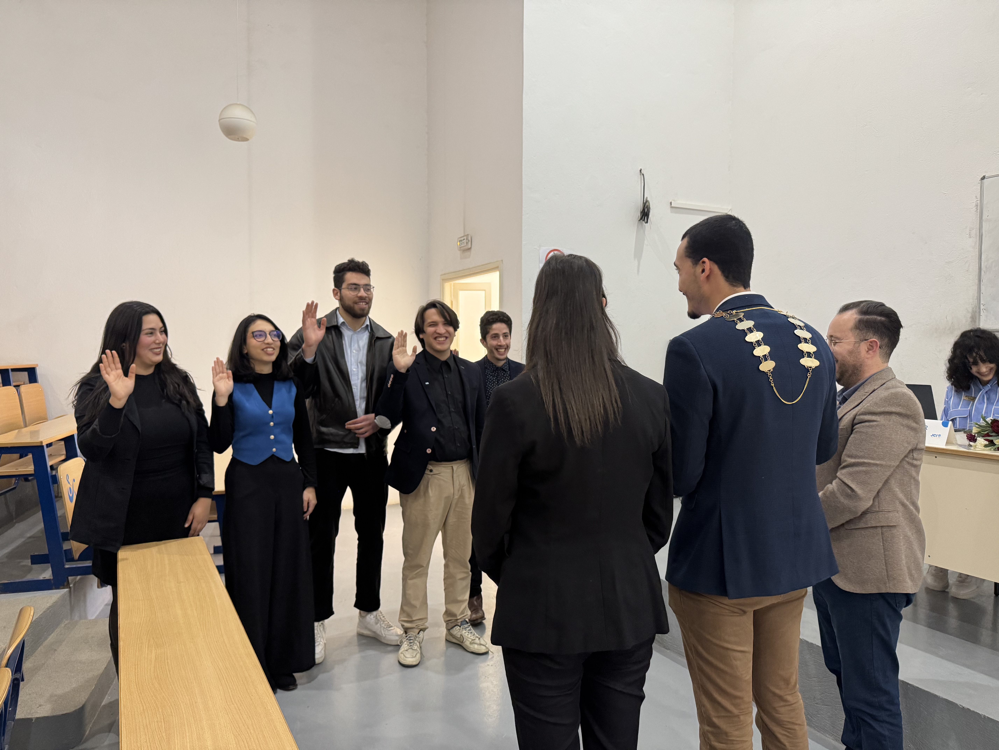

Discover our history, mission and values.
JCI TBS - El Mourouj was founded in 2019 with the vision of creating a community of young leaders committed to both personal growth and collective development. Since then, our organization has supported dozens of youth in their leadership journey through training, opportunities, and responsibilities that prepare them to face global and local challenges. Over the years, we have also organized impactful events within and beyond the Tunis Business School campus, contributing to sustainable development and positive change in our community.
As a local organization of Junior Chamber International (JCI), we are part of a global network of over 200,000 active young leaders in 115 countries.


To provide development opportunities that empower young people to create positive change in their communities. We believe that every young person has the potential to become a leader capable of transforming the world.
نحن نعتقد / Nous croyons / We believe:
أن الإيمان بالله يعطي للحياة معناها الحقيقي
Que la foi en Dieu donne à la vie son véritable sens.
That faith in God gives meaning and purpose to human life.
أن التآخي البشري يفوق سيادة الدول
Que la fraternité humaine transcende la souveraineté des nations.
That the brotherhood of man transcends the sovereignty of nations.
أن الإجتهاد و حرية الأفراد يضمنان العدالة الإجتماعية و الإقتصادية
Que la liberté des individus et de l'entreprise assure mieux la justice économique.
That economic justice can best be won by free men through free enterprise.
أن قيادة الشعوب، تعتمد القانون و ترفض التعسف و الحيف
Que l'autorité doit s'appuyer sur la loi et non sur l'arbitraire.
That government should be of law rather than of men.
أن الذات البشرية هي أهم المكاسب و الثروات
Que la personne humaine est la plus précieuse des richesses.
That earth's great treasure lies in human personality.
أن خدمة الإنسان هي أبلغ عمل في الحياة
Et que servir l'humanité constitue l'œuvre la plus noble d'une vie.
And that service to humanity is the best work of life.

The core values that define our identity.
Developing the full potential of every member.
Creating positive change in our community.
Collaborating beyond borders.
Discover the types of projects and activities we organize.
Support for young entrepreneurs and startup assistance.
Workshops on personal development, leadership, public speaking and project management.
Public speaking contests, debates and entrepreneurial challenges.
The key milestones in our history.
Our local organization was established by a team of passionate young leaders.
our journey pivoted toward a core mission: empowering our members with the tools for future leadership. We dedicated the year to intensive professional training, creating a curriculum that balanced technical expertise with essential soft skills. From mastering Excel and Community Management to refining the art of Public Speaking, our members gained the versatility needed to excel in a rapidly changing landscape.
The 9th edition of the annual “Job Fair TBS,” organized by Tunis Business School in partnership with the 4C Center, successfully brought together students and companies in a professional environment dedicated to career opportunities and networking. The event took place on December 7th at Tunis Business School and provided participants with a full day of interactions, workshops, and recruitment opportunities. The fair hosted 28 exhibiting companies and was supported by more than 15 sponsors, attracting over 800 participants. During the event, students had the opportunity to connect with recruiters, explore career paths, and submit more than 600 CVs to potential employers.
Zakariya Satouri led a team of more than 50 members and coordinated the organization of 7 projects, 23 events, and 15 training sessions that impacted over 3,000 youth. In recognition of his leadership and impact, he was nominated as the 3rd Best Local President in Africa and the Middle East.
JCI TBS El Mourouj organized TBS Olympics, a dynamic event where sports and culture collided in the vibrant heart of Ben Arous. Hosted at the Complexe Culturel et Sportif Chinois, the event served as a premier platform for athletes and enthusiasts to showcase their skills across a diverse range of disciplines, including football, basketball, tennis, and weightlifting, alongside strategic challenges like chess and gaming. Beyond the thrill of competition, the day featured immersive open sessions in gymnastics, aerobics, and modern dance, fostering a spirit of community and physical well-being. This unforgettable experience brought participants together in a high-energy environment, celebrating the joy of sports and the power of collective effort within the Ben Arous community.
JCI TBS and JCI INSAT, in collaboration with INJAZ Tunisia, organized the event **Innolaunch**, a transformative journey that brought together participants to exchange ideas, stimulate creativity, and explore innovative solutions for the future. The event consisted of a brainstorming boot camp where participants worked collaboratively to develop and refine innovative ideas. At the end of the session, a selected number of ideas were chosen to continue in a three-month pre-incubation program that included mentoring sessions. This program allowed participants to further develop their projects and compete for valuable prizes.
The 10th edition of the “Job Fair TBS” provided students with an enriching experience focused on career development and skills enhancement. The event featured two main components. The Job Fair created an opportunity for students to connect directly with companies and startups offering internships, including PFE and summer internships, as well as full-time job opportunities. Participants were able to meet recruiters, present their profiles, and explore potential career paths. In addition, the event included a series of workshops and training sessions aimed at developing both hard and soft skills. Participants also took part in co-creation spaces where they collaborated to solve real-world challenges, along with business games designed to strengthen strategic thinking and teamwork.
Members of JCI TBS – El Mourouj contributed to the organizing committee and activities surrounding the JCI World Congress 2025 in Tunis. The chapter was responsible for designing and creating the discussion panels for the event, developing the themes and structure to encourage meaningful dialogue and exchange between participants. This involvement gave the chapter international exposure and valuable networking opportunities with young leaders from over 100 countries.